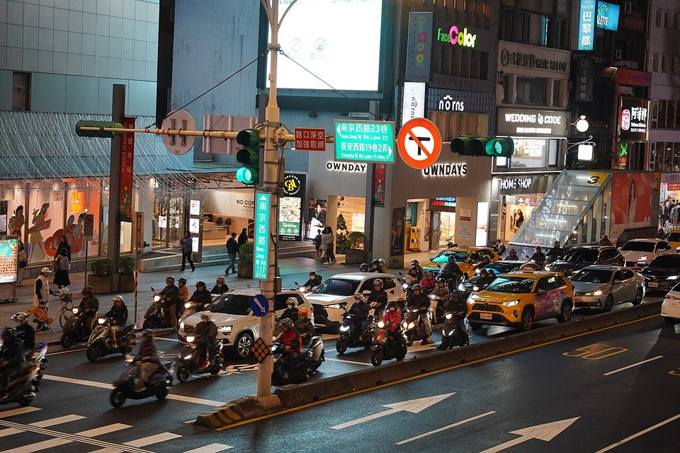

DOWNSTREAM DEMAND · TAIWAN AUTO · 2026.09
2026 年 9 月台灣車市：進口車占五成五、Model Y 單月封王
鋼鐵潮流工作室 · 台灣車市月報 · 發布 2026.10.05

本期重點
9 月新車掛牌 37,054 輛，年增 15%、月增 26.8%，優於市場預估的 3.4 萬輛。但成長主要由進口車撐起：進口車占比衝上 55.5%，國產車失去過半市占。對鋼鐵業而言，國產與進口的消長，比總量更值得關注。
- 民俗月後補交車。 8 月民俗月遞延的交車在 9 月回補，加上貨物稅減徵補助與股市財富效果，買氣明顯回溫。
- 進口車過半。 進口車 20,562 輛、年增 26.7%，占比由 8 月的 52.6% 升至 55.5%；1–9 月累計進口車 153,735 輛，已占一半。
- Model Y 封王，但也撐起成長。 Tesla Model Y 單月 5,154 輛，比第二名 Corolla Cross 多出 1,500 輛以上；若扣除 Model Y，9 月車市其實年減約 1%。
- 電動車約占兩成。 9 月電動車 7,026 輛，Tesla 一家占七成以上，市場仍高度集中。
關鍵數字
新車掛牌37,054 輛年增 +15.0%、月增 +26.8%
進口車20,562 輛占 55.5%
國產車16,492 輛占 44.5%
電動車7,026 輛約占 19%
今年累計307,210 輛年增 +3.7%
累計進口占比50.0%1 月起累計
品牌與車型
| # | 車型 | 國產／進口 | 掛牌數 |
|---|---|---|---|
| 1 | Tesla Model Y | 進口 | 5,154 |
| 2 | Toyota Corolla Cross | 國產 | 3,615 |
| 3 | Toyota RAV4 | 進口 | 2,108 |
| 4 | Toyota Yaris Cross | 國產 | 1,365 |
| 5 | 三菱 J Space | 國產（商用車） | 1,286 |
| 6 | Toyota Town Ace | 國產（商用車） | 1,091 |
| 7 | Ford Territory | 國產 | 879 |
| 8 | Lexus NX | 進口 | 858 |
| 9 | Honda HR-V | 國產 | 752 |
| 10 | Toyota Altis | 國產 | 612 |
成長動能
- 8 月民俗月遞延的交車在 9 月回補。
- 政府新購車減徵貨物稅補助持續助攻。
- 台股走高與經濟成長帶來財富效果。
- Tesla、賓士等進口車大量到港交車；報導指出不少消費者等待進口車關稅調降多時，最終放棄觀望直接下單。
本刊解讀
- 成長幾乎全靠 Model Y。 報導估算，扣除 Model Y 後 9 月掛牌量年減約 1.0%；表面年增 15%，實際上傳統車款的需求並未明顯回溫。
- 到港效應放大單月數字。 Tesla 掛牌量反映船期，季末集中交車使單月衝高；Tesla 今年累計 18,632 輛、年增 77.6%，單月高峰仍須觀察第四季是否延續。
- 國產車空間被擠壓。 1–9 月進口車已占一半，9 月更超過五成五；多款國產車型陸續停產，國產車廠倚重休旅車與商用車守住基本盤。
- 電動化集中於少數品牌。 9 月電動車約占兩成，但 Tesla 占七成以上，國產電動車品牌鴻華先進（Bria、Cavira）合計 454 輛，仍屬起步階段。
對鋼鐵業的意義
- 國產車比重決定汽車鋼板內需。 國產車在台組裝，車身用冷軋、鍍鋅鋼板部分來自國內鋼廠；進口車的鋼材全數在國外生產。進口車占比每提高一點，國內汽車用鋼需求就少一點，總量成長不等於汽車鋼板需求成長。
- 電動車改變用鋼結構。 電動車需要更多先進高強度鋼與熱沖壓件抵消電池重量，驅動馬達則使用高效率無方向性電磁鋼片；國產電動車量能放大，才能帶動國內高階車用鋼需求。
- 商用車是國產基本盤。 三菱 J Space、Toyota Town Ace 等國產商用車穩定出貨，是國產車用鋼的重要支撐。
歷月趨勢
本專欄自 2026 年 9 月起每月更新，累積兩個月以上資料後，將在此呈現掛牌量與進口車占比的月度趨勢。
展望與觀察重點
業界預估 10 月掛牌約 3.7 萬輛、年增約 7.2%。第四季新年式、改款與價格競爭將延續買氣，但國產與進口的消長，以及進口車關稅政策走向，比總量更值得追蹤。
- 10 月進口車占比能否維持五成以上。
- Tesla 第四季交車節奏與 Model Y 銷量。
- 國產車停產車型與新車導入計畫。
- 進口車關稅調降與貨物稅減徵政策的後續。
資料來源
- 2026年9月份臺灣汽車市場銷售報告（U-CAR）
- 9月新車掛牌3.7萬輛 進口車到港帶動 10月估維持買氣（中央社，2026-10-01）
- 進口車大量到港 9月占整體車市55% 強壓國產車（聯合報）
- 9月車市掛牌量年增15% 進口車助攻（MoneyDJ）
- Toyota神車CC輸了！9月台灣汽車銷量冠軍是它（風傳媒）
- 2026 年 9 月台灣新車銷售數字（速報）（7Car）
- 民俗月退場、遞延交車回補！9月台灣車市衝上3.7萬輛（聯合新聞網）
- 銷售戰報／2026年9月車市買氣回升！（TVBS）
掛牌數為監理機關數據交換資料，各媒體統計口徑可能略有差異。內容僅供產業資訊參考，不構成投資建議。新聞版權屬原出處所有。